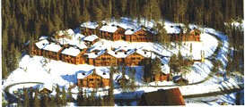
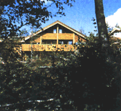

HEMSEDAL RESORT

Hemsedal Alpine Apartments
300 m from Hemsedal Skisenter and 100 m from the lifts and cross-country trails. 25 apartments for four persons and 25 apartments for 6-10 persons with heating cables in the floors, fireplace, dishwasher, TV, drying room, and ski waxing stalls. Service center with reception, fully licensed restaurant, discotheque, pay phones and laundry.

Renovated and located right next to the lifts and the well known Stavkroa night-spot. The complex has 43 apartments, 19 with 6-8 persons, and 24 with 2-4 pers. These are equipped with (among other things) with dishwasher, cooker (stove), and satelite TV. Best suitable for families in mid-week and a younger audience on weekends/public holidays.
Hemsedal Alpine resorts
3.1.96 Schibstednett